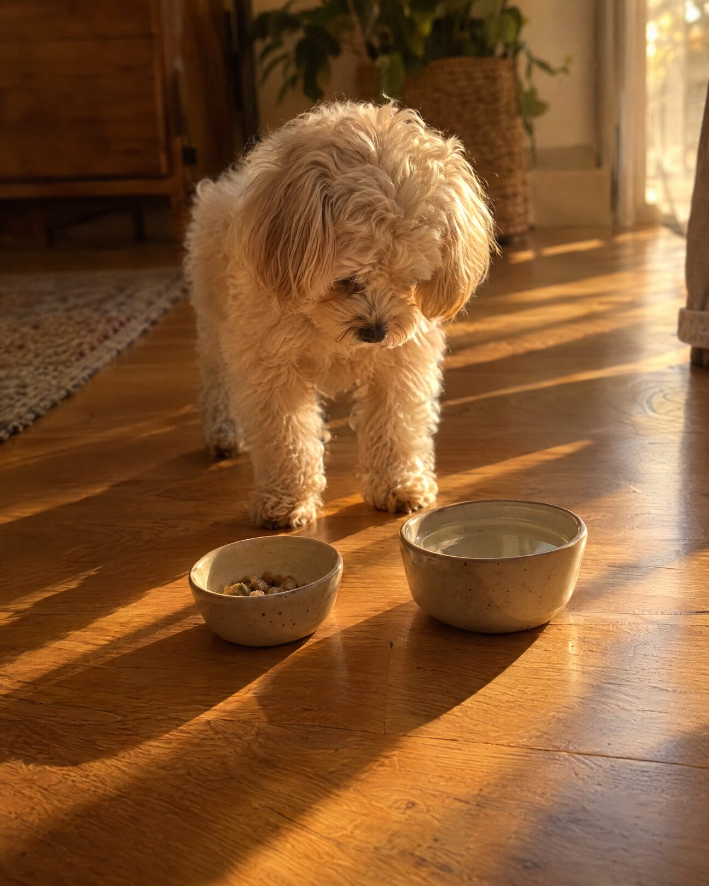
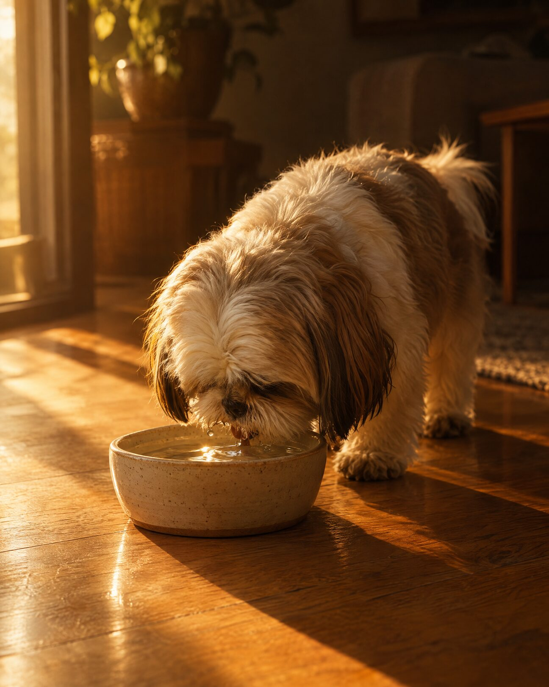
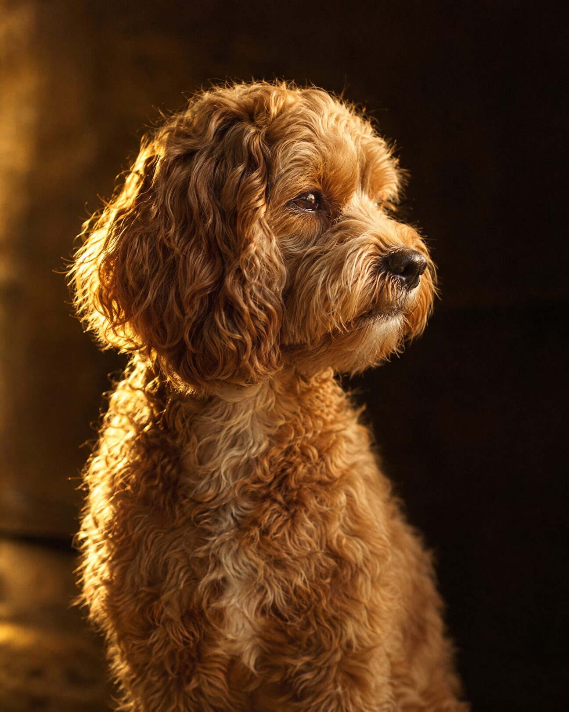

Understand Small Dogs
One argument, two treatments. Five frames each at 1080 × 1350: food, water and treats share one small space, and that changes everything.
A · Golden Hour
Dark, warm and cinematic. The photograph sits in its own inset panel; the words get their own panel below or above it.

all sharing one small space.
Tighter margins. Less room for error. Every choice carries more weight.
The bowl has to do more than it should.
but have less room.
They eat less per meal, so each portion has to carry all the protein and nutrients they need.
Every bite carries the full weight.


density falls.
Water isn't the problem. Space is. The body adapts to water. Nutrients don't always.
When density drops, there's no backup plan.
Big impact.
Treats use the same space and the same calories. In a small dog, that adds up to the whole day.
They're never just treats.


Different constraints.
Less to work with. More riding on it.
B · Cream Poster
Light, graphic and poster-like, in the site's own cream, navy and crimson. The photograph sits in an arched window beside a big numeral. The last frame flips to navy with no photo at all.
Tighter margins. Less room for error. Every choice carries more weight.
all sharing one small space.
The bowl has to do more than it should.
They eat less per meal, so each portion has to carry all the protein and nutrients they need.
but have less room.
Every bite carries the full weight.
Water isn't the problem. Space is. The body adapts to water. Nutrients don't always.
density falls.
When density drops, there's no backup plan.
Treats use the same space and the same calories. In a small dog, that adds up to the whole day.
Big impact.
They're never just treats.
Different constraints.
Less to work with.
More riding on it.
Caption (works for either)
A small dog isn't a smaller version of a big dog. Food, water and treats all share the same tiny space. So every bite counts for more, and every extra counts for more too. Not different biology. Different constraints. ✦ Small breed only. Big care always.